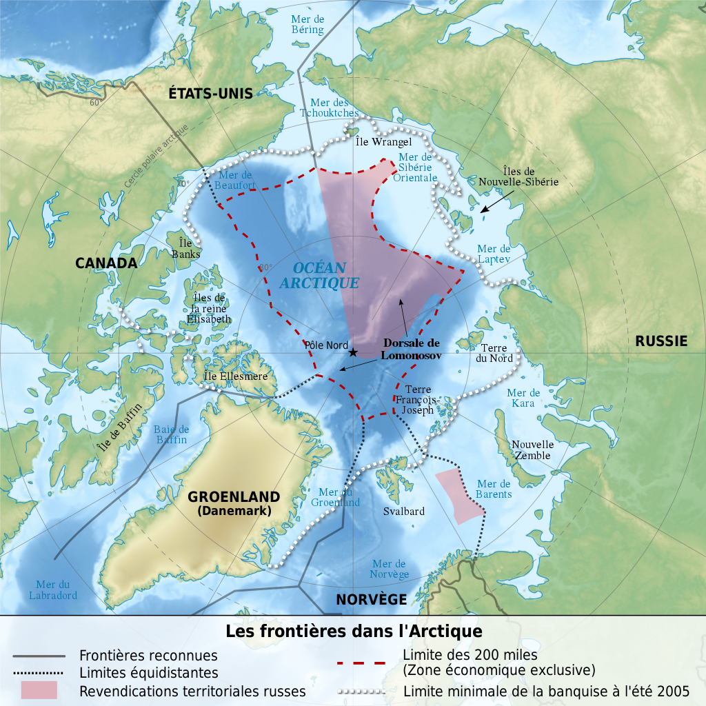
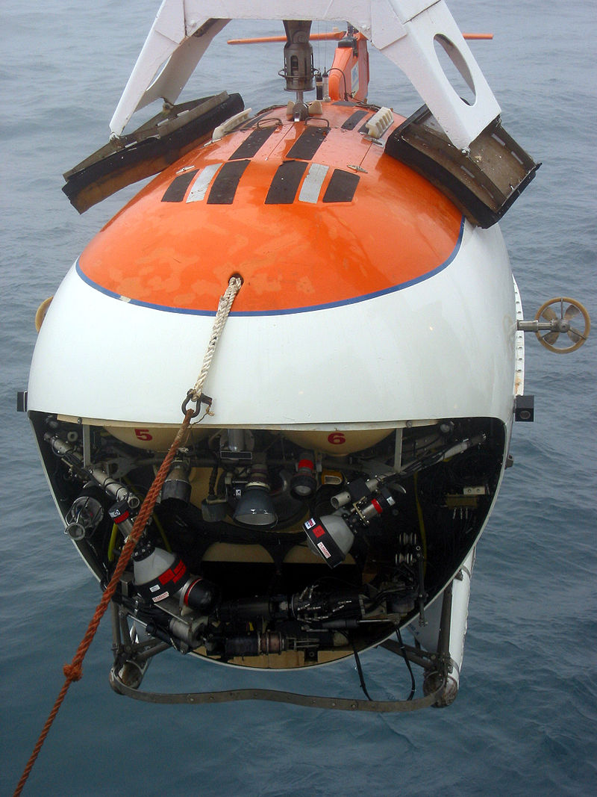

En l'état actuel du droit international, aucun pays ne possède le pôle Nord ou la région de l'océan
Arctique qui l'environne. Les cinq États entourant la zone, la Russie, les États-Unis (par l'Alaska),
le Canada, la Norvège et le Danemark (par le Groenland)
voient leur souveraineté limitée par la limite des 200 milles marins (zone économique exclusive).
L'océan Arctique est identifié depuis des décennies comme une région riche en pétrole et en gaz naturel.
Dans une publication datant de juillet 2008, le United States Geological Survey estime que le sous-sol
arctique renfermerait 90 milliards de barils de pétrole, 1 670 billions de pieds cubes de gaz naturel et
44 millions de barils de gaz naturel liquide. Cette situation rend le pôle Nord et l'Arctique très convoités
par les pays limitrophes.
Repartition des territoires en Arctique
En 1948, une expédition russe fait la découverte de la dorsale de Lomonossov, une structure géologique
s'étendant sur 1 800 kilomètres depuis les îles de Nouvelle-Sibérie jusqu'au large du Groenland et
de l'île d'Ellesmere. Ce n'est qu'au début des années 2000 que la dorsale océanique attire l'attention
de la communauté internationale, à la suite de la requête officielle de la Fédération de Russie auprès
de la commission des Nations unies, portant sur la limite du plateau continental. Le document propose
d'établir une nouvelle limite périphérique pour le plateau continental russe, en dehors de la zone des
200 milles marins. Cependant l'article 76 de la Convention des Nations unies sur le droit de la mer prévoit
qu'une extension de 150 milles marins peut faire l'objet
d'une requête, si le plateau continental se prolonge sous l'eau4, ce qui exclut la revendication russe
dont le plateau se trouve à plus de 1 000 milles marins du pôle.


Le Danemark, le Canada et la Russie se disputent la structure géologique et affirment que la dorsa
est une extension de leurs plateaux continentaux respectifs. À la fin juin 2007, quelque soixante-dix
géologues russes auraient réussi à prouver que les dorsales médio-océaniques de Lomonossov seraient des
extensions du continent eurasiatique, reliant ainsi le pôle Nord au territoire russe. C'est sur la
base de cette affirmation que l'expédition russe Arktika 2007 envoya le brise-glace nucléaire Rossia,
le navire de recherche Akademik Fédorov et deux mini-sous-marins, Mir 1 et Mir 2, pour explorer la région.
Le 2 août 2007, des scientifiques russes ont plongé à 4 261 mètres sous la surface, et déposé une capsule
de titane contenant le drapeau russe, en symbole de leur revendication sur la région.
Repartition des territoires en Antarctique
Au cours du XXe siècle, plusieurs nations ont émis des revendications territoriales sur le continent Antarctique.
Ces revendications ont actuellement peu d'intérêt pratique du fait de la signature du traité sur l'Antarctique en
1959 par les nations
en question, mais elles continuent généralement d'être observées par les cartographes.
En 2019, sept pays ont revendiqué des parties du continent Antarctique. Depuis l'entrée en vigueur du
traité sur l’Antarctique en 1961, ces revendications ont été ajournées sur la totalité des terres au sud
du 60e parallèle sud et la plupart des pays du globe ne les reconnaissent pas. Aucune autre nation n’a émis de
revendication (bien que les États-Unis et la Russie se soient réservé le droit d’en faire)
En l’absence de reconnaissance internationale, ces revendications sont d’une pertinence limitée, sans compter que
le continent a été dédié aux missions scientifiques et que toute mission peut s’installer dans n’importe quel endroit,
mais elles sont néanmoins signalées comme partie intégrante de leur territoire par les pays concernés. Ainsi,
des bases scientifiques ont été installées dans les secteurs revendiqués par d’autres pays, tels la Chine,
l’Afrique du Sud, le Japon, les États-Unis (au pôle Sud), ou par des pays revendiquant d’autres secteurs
(comme la base franco-italienne Concordia, dans le secteur australien).
À l’exception de l’île Pierre-Ier, toutes les revendications ont pris la forme de secteurs s’étendant jusqu’au
pôle Sud, délimités par des degrés de longitude. Aucune revendication n’a été formellement établie entre 60° 00′
S, 150° 00′ O et 60° 00′ S, 90° 00′ O.
En outre, le Brésil a déclaré en 1986 le secteur compris entre 53° O et 28° O comme une « zone d’intérêt ».